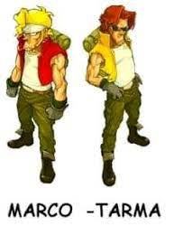

Año 2028 dC. Tras años de preparación y gracias al Ejército Rebelde, el General Morden comienza su golpe de estado con el objetivo de controlar el planeta y eliminar a los líderes actuales. Empieza pues, la Primera Guerra Moderna.
Esta guerra relámpago tiene enormes probabilidades de éxito, ya que cuenta con sus propias fuerzas insurgentes, además de un gran número de simpatizantes los cuales tienen una gran preparación. Por otro lado, al rebelarse en innumerables lugares del planeta, provocan que en sólo una semana tras la orden de ataque, el general controle todas las ciudades más importantes del mundo, incapaces de resistir un sólo día más.
El mundo vive en estos días una gran desesperanza y temor, ya que ven cómo una época oscura está a punto de llegar. Sin embargo y en medio de toda esta revuelta, un pequeño grupo de supervivientes de las fuerzas del Ejército Regular comienza a organizarse. Lo que en principio eran tan sólo unos tímidos movimientos encaminados a resistir y conseguir un poco más de tiempo, acaba siendo todo un frente unido para luchar contra la invasión de Morden, y poco a poco van reuniendo más y más efectivos en aras de resistir a los ataques y ganar terreno a las fuerzas rebeldes. Parecía que en este ambiente de clandestinidad, el momento llegaba, por fin podrían pararles los pies al villano.
Pero lo peor fue que en dicha fábrica trabajaban paralelamente en un proyecto secreto, un nuevo tipo de arma polivalente y con una gran capacidad tanto ofensiva como defensiva, un tanque llamado Metal Slug. Tras la explosión, estos tanques quedan expuestos en medio de las ruinas humeantes de la factoría, lo que significa que cualquiera de ellos puede caer en manos de la rebelión. Había que hacer algo inmediatamente, o de lo contrario la guerra estaría perdida sin remisión.

Dentro de esas fuerzas gubernamentales que habían conseguido alzarse tras el desastre de esa primera semana de invasión, nos encontramos con un pequeño grupo de valerosos soldados, los cuales forman parte del escuadrón de las fuerzas especiales Peregrine Falcons. Son múltiples las heroicidades de sus integrantes, y muchas las victorias que consiguieron hasta ese momento en la guerra. Debido a este intachable historial, las fuerzas del gobierno deciden encargarles una nueva misión: con un pequeño número de efectivos para no llamar la atención, deberán infiltrarse más allá de las líneas enemigas y tras ello, localizar al líder. Cuentan con los Metal Slug, las armas tácticas secretas que se encuentran esparcidas por todo el territorio enemigo. En todo caso, las fuerzas del gobierno son extremadamente claras: si estas armas no pueden ser recuperadas, bajo ningún concepto deberán caer en manos del enemigo y por lo tanto, deberán ser destruidas.
Los dos soldados elegidos para esta misión, Marco y Tarma, eran conscientes de que no debían fallar. La batalla para someter al General Morden está a punto de comenzar, y el Ejército Regular debe reunir efectivos suficientes para poder encarar el ataque con ciertas probabilidades de éxito. Así pues, tras dos meses de duro trabajo, consiguen reunir a 3.000 soldados de infantería, 50 aeronaves de combate, 200 tanques y unos 30 Metal Slug. La ofensiva da comienzo en la primavera de ese mismo año mediante ataques simultáneos alrededor del mundo, consiguiendo una serie de fáciles victorias que devuelven grandes dosis de moral a las tropas regulares.
| Marco y Tarma |  |
La batalla más importante de cuantas hubo fue la Batalla del Sistema Montañoso Villeneuve, situada en el sureste asiático. Supuso todo un punto de inflexión en la guerra, ya que las tropas regulares salieron victoriosas, desmoralizando enormemente al enemigo y como se vería poco después, supondría el inicio del fin de la contienda.